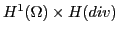

We present a mimetic least squares method for Darcy flow, using nodal elements for pressure and lowest order face elements for the fluxes. Because the pressure and flux are not subject to a joint inf-sup condition, we can choose the discrete spaces independently. The choice of a face element discretization for the fluxes gives us a method with improved stability, accuracy and conservation properties.
The mimetic least-squares functional is norm-equivalent to a norm on

. As a result, the associated linear system, though positive definite, has a 2x2 block structure, where one diagonal element is a nodal Laplacian, and the other is a grad-div problem. Owing to the norm-equivalence of the least-squares functional, the system can be effectively preconditioned by its diagonal.We treat the least-squares algebraic equations with smoothed aggregation algebraic multigrid and the latter with the compatible gauge approach of Bochev et al. [1]. The structure of the equations allows us to combine these into a simple block preconditioner. We demonstrate good algorithmic and parallel scalability of our problem on up to 17,000 cores on NERSC's hopper machine.
[1] P. Bochev, C. Siefert, R. Tuminaro, J. Xu and Y. Zhu. Compatible Gauge Approaches for H(div) Equations. Technical Report, SAND 2007-5384P, Sandia National Laboratories, August 2007.